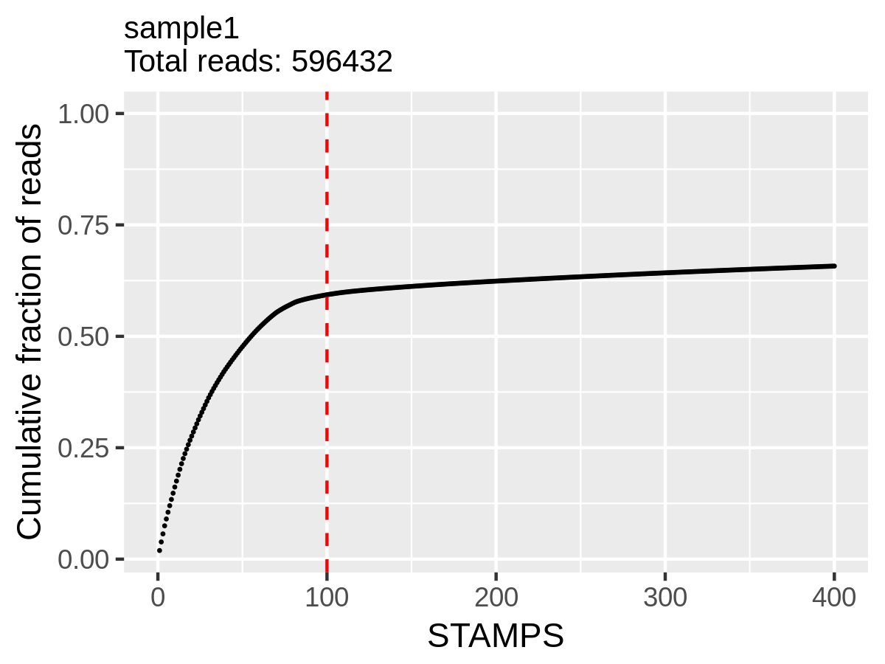
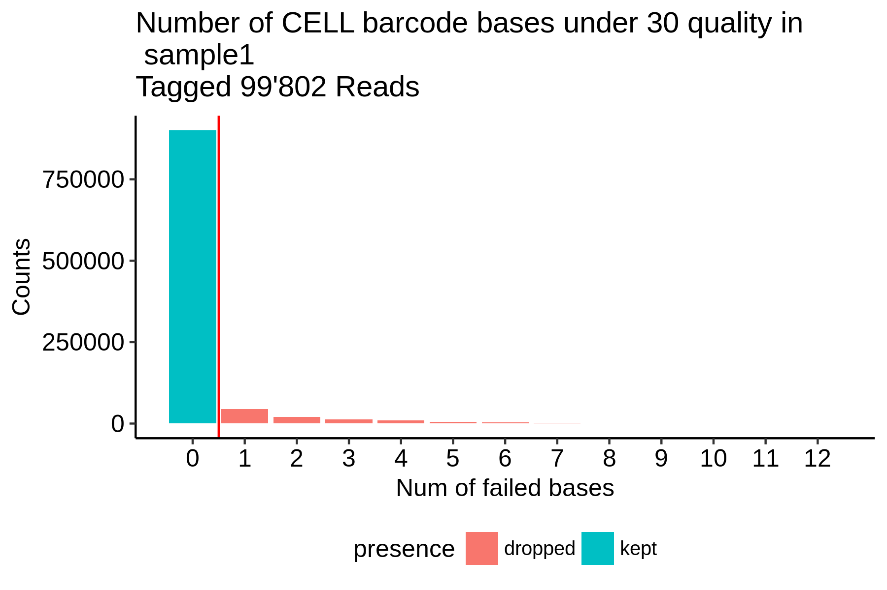
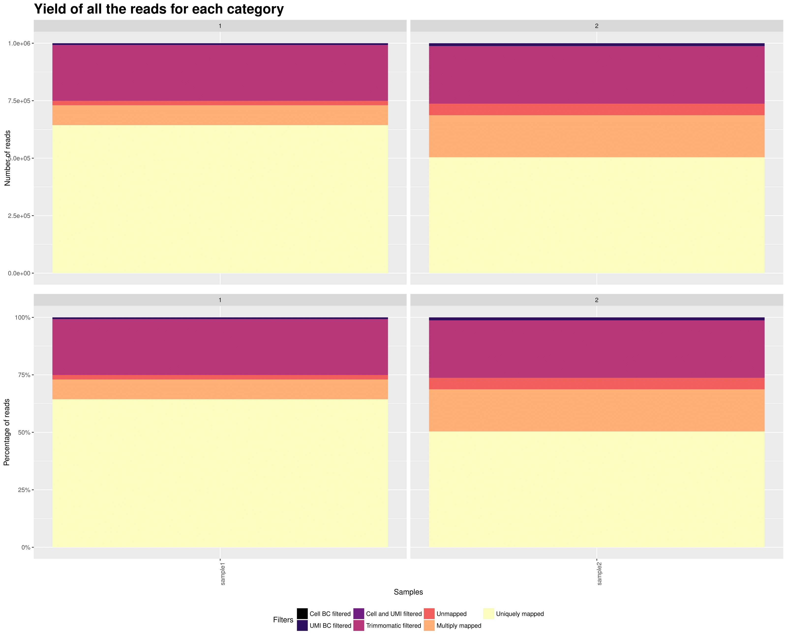

On of the main purpose of this package is getting information about your data to improve your protocol and filter your data for further downstream analysis.
Here is a list of plots and reports that you will get from the pipeline.
Fastqc, STAR and trimmomatic reports are now generated as multiqc reports in the reports folder.
1. Knee plot (per sample)

On the x axis is the cumulative fraction of reads per STAMPS (captured cell).
On the y axis is the ordered STAMPS (based on total reads).
This allows you to determine how much of the reads you actually captured with the number of cells you expected.
The cutting is based on the expected_cells parameter in the samples.csv file.
If you see a clear bend on the plot that is higher in the number of cells than what you expected, you should increase the expected_cells value and rerun the extract step. If it is under, I would advise to filter out your data with a downstream analysis tool such as Seurat.
Note: I advise not to try to discover "real" cells/STAMPS at this stage. I suggest to extract the expected number of cells and filter out later in post-processing with other kind of meta data.
2. Cell barcode Quality trim (per sample)
 On the x axis are the number of failed bases in the cell barcodes. On the y axis are the number of cell barcodes. This plot allows you to adjust your filter of minimum quality and number of allowed minimum quality for the filtering process of the cell barcodes.
3. UMI Quality trim (per sample)
 On the x axis are the number of failed bases in the UMI barcode.
On the y axis are the number of UMI barcodes.
This plot allows you to adjust your filter of minimum quality and number of allowed minimum quality for the filtering process of the UMIs.
On the x axis are the number of failed bases in the UMI barcode.
On the y axis are the number of UMI barcodes.
This plot allows you to adjust your filter of minimum quality and number of allowed minimum quality for the filtering process of the UMIs.
4. PolyA trimming of reads (per sample)
 On the x axis are the length of the trimmed polyA
On the x axis are the length of the trimmed polyA
On the y axis are the number of trimmed polyA.
This plot shows you the distribution of the polyA trimming step.
5. SMART adapter trimming of reads (per sample)
 On the x axis are the length of the trimmed SMART adapter
On the x axis are the length of the trimmed SMART adapter
On the y axis are the number of trimmed SMART adapter.
This plot shows you the distribution of the SMART adapter trimming step.
6. RNA metrics (per sample)
 On the x axis are top barcodes based on your
On the x axis are top barcodes based on your expected_cells values or the barcodes.csv file.
Top plot: On the y axis are the number of bases classified by region of mapping.
Bottom plot: On the y axis are the percentage of bases classified by region of mapping.
This plot gives a lot of different informations. The top plot allows you to quickly compare cells between them in terms of how much has been mapped. This can sometimes help identify outliers or bad runs.
The bottom plot allows you to find cells that have an "abnormal" mapped base distribution compared to other cells.
7. Cell and UMI dropped Barcodes (across samples)
 On the x axis are the samples.
On the x axis are the samples.
TOP: On the y axis are the number of reads discarded.
BOTTOM: On the y axis are the percentage of reads discarded.
This plot allows you to adjust your filter of minimum quality and number of allowed minimum quality for the filtering process of the UMIs. The Not_dropped category is going to be mapped in STAR.
8. Yield (across samples)

On the x axis are the samples.
TOP: On the y axis are the number of reads attributed to each category.
BOTTOM: On the y axis are the percentage of attributed to each category.
This plot gives you an overview of all the reads from your samples and how they are distributed in all the possible categories. The reads that are uniquely mapped ar the ones you will keep at the end for the UMI count matrix.
Mixed experiment
8. Barnyard plot (per sample)
 This plot shows you species purity for each STAMPS. Mixed and No call STAMPS are dropped and only single species are kept for extraction.
You can change the minimum ratio of transcripts to define a STAMP as mixed or not in the configfile with:
This plot shows you species purity for each STAMPS. Mixed and No call STAMPS are dropped and only single species are kept for extraction.
You can change the minimum ratio of transcripts to define a STAMP as mixed or not in the configfile with: species_ratio
You get one plot for genes and one plot for transcripts. The selection is done on the transcript level.